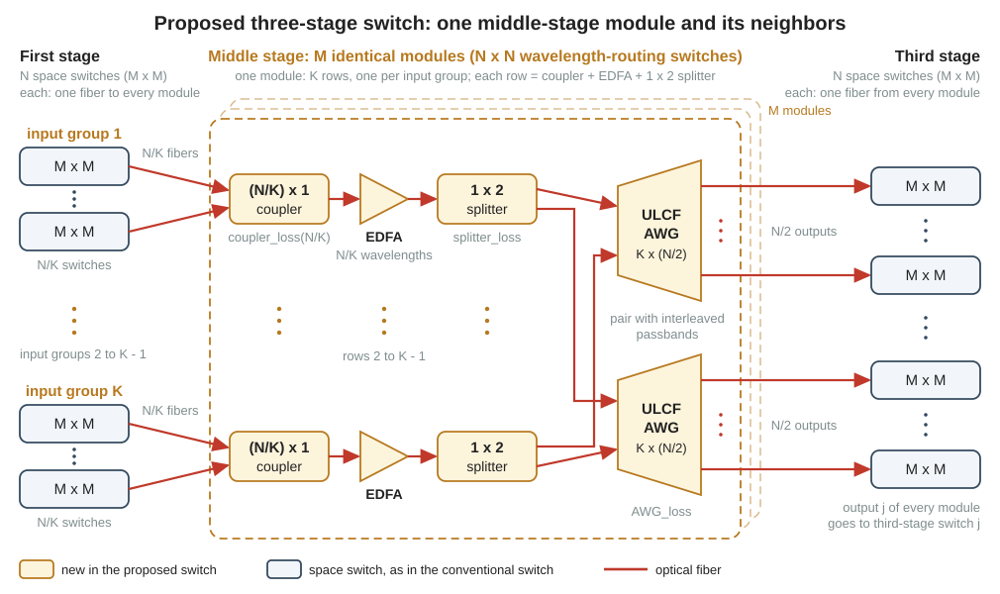

Research
23Proposed three-stage switch: your work
Pages 21 and 22 gave you two switches that work. This page describes the third switch, the proposed three-stage switch, for which no code exists yet. It states the idea, the questions that your work must answer, the three tasks and the decisions that are yours. It contains no solution, on purpose: finding the solution is your research.
matlab/work/work1_wavelength_rule.m, matlab/work/work2_three_stage_proposed.m, matlab/work/work3_comparison.mGiven: step21_two_stage_one_point, step22_three_stage_one_point, main_two_stage_ULCF, main_three_stage_conventional, awg_channel, freqoff1. The idea in words
The proposed three-stage switch is the conventional three-stage switch of page 22 with a new middle stage. The first stage and the third stage keep their \(N\) space switches of size \(M \times M\). The \(M\) wavelength-routing (WR) switches of the middle stage are replaced. A WR switch is a switch in which the wavelength of a signal decides the output port (page 17). The symbols are those of page 22. \(N\) is the number of wavelength channels (N). \(M\) is the size of the space switches (sw_size in the three-stage scripts).
The idea is taken from paragraphs 5 to 7 of the introduction of the planned paper (page 01). The facts about the two earlier switches come from two papers, which this page calls the JLT paper and the JOCN paper.
- Mitsuya et al., "Three-Stage Optical Circuit Switch Architectures for Intra-Datacenter Networking," J. Lightw. Technol., vol. 43, no. 2, pp. 400-407, 2025 (doi 10.1109/JLT.2024.3465208)
- Nagai et al., "Design and Verification of Large-Scale Optical Circuit Switch Using ULCF AWGs for Datacenter Application," J. Opt. Commun. Netw., 2018
What is replaced, and by what
In the conventional switch, a WR switch has three parts: one \(N \times 1\) aggregation coupler, one erbium-doped fiber amplifier (EDFA) and one arrayed-waveguide grating (AWG) with a single input port. The aggregation coupler combines the signals of the \(N\) first-stage switches into one fiber. The EDFA amplifies all of them together. The AWG sends each wavelength to its own output port.
The proposed switch takes the WR switch of the two-stage ULCF switch instead (page 21). A ULCF (uniform-loss and cyclic-frequency) AWG has several input ports, and \(K\) of them are used (ULCF_deg in the two-stage scripts). The WR switch then consists of \(K\) couplers of size \((N/K) \times 1\), \(K\) EDFAs, \(K\) 1 × 2 splitters and one pair of \(K \times (N/2)\) ULCF AWGs (Fig. 1). A 1 × 2 splitter divides the light of one EDFA between the two AWGs of the pair. One AWG of the pair handles the odd wavelength channels, and the other AWG handles the even ones (page 17). The introduction calls one such WR switch a middle-stage module, and this page does the same.
Each coupler of a module collects the signals of \(N/K\) first-stage switches. These switches form an input group: the set of first-stage switches whose signals enter the same coupler, the same EDFA and the same input port of the ULCF AWGs. The \(N\) first-stage switches are therefore divided into \(K\) input groups.

coupler_loss, splitter_loss and AWG_loss) are the function and the two variables that give the losses of these parts in blocks [4] and [6] of step21_two_stage_one_point. The figure shows the hardware only: which wavelength travels on which fiber is your task 1. The module is drawn after Fig. 4 of the JOCN paper, with 1 × 2 splitters in place of its de-interleavers. A de-interleaver is a filter that separates the odd and the even wavelength channels (page 17).| Element | Conventional three-stage switch | Proposed three-stage switch |
|---|---|---|
| Aggregation coupler | one \(N \times 1\) coupler; 24.5 dB for \(N = 96\) | \(K\) couplers of size \((N/K) \times 1\) |
| EDFA | one EDFA; its output power is shared by \(N\) wavelengths | \(K\) EDFAs; the output power of each is shared by \(N/K\) wavelengths |
| Wavelength demultiplexer | one \(1 \times N\) AWG with one input port; AWG_loss = 6 dB | \(K\) 1 × 2 splitters and one pair of \(K \times (N/2)\) ULCF AWGs; AWG_loss + splitter_loss = 9 + 3.5 = 12.5 dB |
| Crosstalk of the AWG on the wavelength of the signal | none, because the AWG has one input port | up to \(K-1\) leaks from the other input ports, each 32 dB below the signal (AWG_XT, block [7] of step21) |
| Wavelength of a connection | fixed by the third-stage switch alone | depends on the input group too: your task 1 |
Two expected benefits
Benefit 1: less loss before the EDFA. A loss in front of an amplifier lowers the SNR by the same number of dB (page 15). A coupler with \(N/K\) inputs has less loss than a coupler with \(N\) inputs. For \(N = 96\) and \(K = 12\) the difference is coupler_loss(96) - coupler_loss(8) = 24.5 - 10.5 = 14 dB. The two-stage ULCF switch of page 21 already uses this benefit. Table 1 shows its price: \(K\) EDFAs in place of one, more loss behind the EDFA, and crosstalk of the AWG itself.
Benefit 2: different wavelengths at one third-stage switch. The space switches are built from selectors, and a selector that is switched off still passes a small part of its signal. This part is a leak (page 16). The target signal is the one signal that a script follows and whose bit errors it counts. In the conventional switch, the output port of the AWG fixes the wavelength, so all signals that arrive at one third-stage switch have the same wavelength. Every leak inside that switch is then in-band crosstalk: it lies on the wavelength of the target signal, and no filter can remove it. In the proposed switch, two signals for the same third-stage switch use different wavelengths when their first-stage switches belong to different input groups. A leak on another wavelength is not in band. If the coherent receiver can separate the two frequencies (page 14), the leak lies outside the band of the receiver and does not disturb the target signal. This benefit is new. It is an expectation, not a published result: showing how large it is, and when it exists at all, is your work. The task files call this benefit the crosstalk advantage of the proposed switch.
Together, the two benefits are expected to improve the transmission performance, that is, to lower the BER at the same transmitter power. The improvement can be used in several ways: for more ports, for a higher throughput, for a lower transmitter power, or for a third stage with fewer elements (selector + coupler in place of selector + selector, as in Scheme A2 of page 22).
The wiring rule: all middle-stage modules are wired identically
The three-stage switch of this project is rearrangeably non-blocking (page 11). A new connection can be blocked although both of its end ports are free. An existing connection is then moved to another middle-stage module; this move is a rearrangement. In the conventional switch a rearrangement switches selectors only, because the wavelength of a connection is fixed by its third-stage switch. The JLT paper gives the switching times: less than 10 µs for a selector, and more than 100 µs for the tunable laser of a transmitter when it changes its wavelength. The proposed switch must keep this advantage.
In the proposed switch the wavelength depends on the input port of the ULCF AWGs. If a first-stage switch entered different input ports in different modules, a rearrangement could change the wavelength of a connection. The proposal therefore makes two things the same in all \(M\) modules:
- the input groups: a first-stage switch belongs to the same input group in every module;
- the output wiring: output \(j\) of every module goes to third-stage switch \(j\).
The introduction (paragraph 6) claims that, with this rule, the wavelength of a connection with fixed end points does not depend on the module that carries it. Your task 1 must show that the claim holds.
One difference from the conventional switch remains. There, a receiver on third-stage switch \(j\) always receives wavelength \(j\). In the proposed switch the wavelength at a receiver can depend on where the signal comes from. When a new connection is set up, the receiver may have to tune its local oscillator (LO), the laser inside a coherent receiver that selects the wavelength (page 14). The introduction therefore treats two cases separately: the rearrangement of an existing connection, and the setup of a new connection.
2. Questions your work must answer
Paragraphs 5 to 7 of the introduction promise answers to the eight questions below. This package answers none of them. The tag after each question names the task of section 3 that answers it.
- Which wavelength does a connection use? A connection goes from a transmitter on first-stage switch \(i\) to a receiver on third-stage switch \(j\). In the conventional switch the answer is channel \(j\). Give the rule for the proposed switch. work1
- Does the wavelength depend on the middle-stage module? The wiring rule of section 1 is meant to prevent this. Show it with your rule; a statement alone is not enough. work1
- Which leaks at a third-stage switch are in band? A third-stage switch receives up to \(M\) signals, one from each module. For one target signal, find which of the other \(M-1\) signals have its wavelength. work1
- How does the answer to question 3 depend on the traffic? The traffic decides where the signals at one third-stage switch come from. The introduction names two traffic conditions, dispersed and concentrated. The exact definitions are yours (section 4). work1
- How much transmitter power, or how many ports, does the proposed switch gain? The measure is the required transmitter power: the lowest \(P_{\mathrm{Tx}}\) (
PTx) for which the BER stays at or below the FEC limit. The FEC limit (BER_limit = 1e-2) is the largest BER at which forward error correction still removes the errors (page 14). Find out how much of the improvement comes from the smaller couplers and how much comes from the leaks on other wavelengths. Keep the leaks of the third-stage switch apart from the crosstalk of the ULCF AWG itself. work2 - Can the improvement be used for a simpler third stage? In the conventional switch, Scheme A2 (selector + coupler in the third stage) needs fewer selectors than Scheme A1 (selector + selector), but it is infeasible for \(M = 128\) (page 22). Find out whether the proposed switch changes this. work2 work3
- What does it cost in hardware? A middle-stage module needs \(K\) EDFAs and \(K\) 1 × 2 splitters; the WR switch of the conventional switch needs one EDFA. Count the elements per port for all three switches. work3
- Under which conditions does the benefit disappear? A design guideline must also say when the proposed switch is not the better choice. work3
3. The three tasks
Each task has a file in the folder matlab/work/. The file holds a header that states the task. Below the header it holds only these two lines:
clear; close all; rng(1);
% ---- your code starts here ----The code below the last line is yours. The three sub-sections follow the three headers; each header ends with a list of questions to think about, which this page does not repeat. Do the tasks in the order of Table 2, because each task uses the result of the task before. They are phases 4 to 6 of the workflow.
Every task ends with consistency conditions. A consistency condition is a property that a correct result must have, whatever the result is. It tests your result, but it does not tell you the result. Your result must pass all of them.
| Task | File | Kind of work | Result |
|---|---|---|---|
| 1 | work1_wavelength_rule.m | whole numbers only: no waveform, no noise, no BER | wavelength rule, traffic definitions, number of in-band leaks |
| 2 | work2_three_stage_proposed.m | transmission simulation of one target signal, in the same way as step22_three_stage_one_point | BER, power budget and SNR budget, required transmitter power |
| 3 | work3_comparison.m | comparison of the three switches on one common parameter set | port count, throughput, hardware count |
Task 1: the wavelength rule (work1_wavelength_rule)
Goal. Find the wavelength channel of every connection in the proposed switch. Then count the leaks in one third-stage switch that have the wavelength of the target signal.
You are given.
- Pages 17 and 22, and this page.
lib/awg_channel.m: the wavelength channel between one input port and one output port of an AWG.main/step21_two_stage_one_point.m(a ULCF AWG with \(K\) couplers and \(K\) EDFAs) andmain/step22_three_stage_one_point.m(the conventional three-stage switch).- The wiring rule of section 1.
You produce.
- The wavelength rule: the wavelength channel of a connection from first-stage switch \(i\) to third-stage switch \(j\). Your division of the first-stage switches into input groups is a part of the rule. Show the rule for a small example that you can check by hand.
- Exact definitions of the two traffic conditions, dispersed and concentrated. The task files call them traffic patterns.
- For both traffic conditions: the number of leaks on the wavelength of the target signal in one third-stage switch, for several \(K\) and \(M\), as a table or a figure.
- \(K = 1\) gives the conventional switch again (block [7] of
step22_three_stage_one_point). - The wavelength of a connection does not depend on the middle-stage module that carries it.
- Concentrated traffic removes the crosstalk advantage of the proposed switch.
- An aggregation coupler never carries two signals of the same wavelength.
Task 2: the transmission simulation (work2_three_stage_proposed)
Goal. Simulate the proposed switch in the way step22_three_stage_one_point simulates the conventional switch: one target signal passes the whole switch, and its bit errors are counted. Two things are different for the target signal: its path through the middle stage (losses, amplifier, AWG), and the leaks in the third-stage switch, some of which are on another wavelength. Find out how much transmitter power, or how many ports, the proposed switch gains, and how much of this improvement comes from each of the two differences.
You are given.
main/step22_three_stage_one_point.m: the skeleton of a three-stage switch, with a power budget and an SNR budget.main/step21_two_stage_one_point.m: a middle stage with ULCF AWGs, with the same two budgets.main/main_three_stage_conventional.m: the search for the required transmitter power.lib/freqoff.m: a function that moves a signal to another frequency.lib/awg_channel.mand your result of task 1: the wavelength channel of every signal.- Pages 17 and 22, and this page.
You produce.
- One operating point of the proposed switch, that is, one set of parameter values: the BER, the power after every block and the SNR contributions, each from the simulation and from a budget of your own. A budget is a calculation with formulas only, without random numbers, as in sections 5 and 6 of
step22_three_stage_one_point. - The required transmitter power for several sizes of the space switches and several \(K\), for both types of the third stage and both traffic conditions.
Leave the given files as they are, and keep your own scripts in the folder work. Save every result together with its parameters and its seed, the number that starts the random number generator.
- \(K = 1\) (one input group) with the AWG of
step22gives the result ofstep22_three_stage_one_pointagain. - Concentrated traffic removes the crosstalk advantage of the proposed switch.
- The simulated SNR agrees with your hand budget, and so does the power after every block. The two given scripts show how: their self-checks accept a difference of 0.1 dB in power and of 0.7 dB in SNR.
Task 3: the comparison (work3_comparison)
Goal. Compare three switches in a fair way: the two-stage ULCF switch, the conventional three-stage switch and the proposed three-stage switch. Compare the port count, the throughput and the hardware count, all on one common parameter set. The figures and tables of this task are the main results of your paper.
You are given.
main/main_two_stage_ULCF.mandmain/main_three_stage_conventional.m: port count versus transmitter power of the two given switches.- Your results of tasks 1 and 2: the proposed switch.
ref_data/jlt2025_three_stage_ref.csv: the conventional three-stage switch in Table V of the JLT paper, with the required transmitter power and the number of 1 × 2 switch elements per port (the file calls them selectors).- Pages 21 and 22, and this page.
You produce.
- The common parameter set as a table, with the reason for every value.
- Port count versus transmitter power of the three switches in one figure. For the proposed switch: several \(K\), both types of the third stage and both traffic conditions.
- The throughput of the three switches (port count times the bit rate of one port).
- The hardware count of the three switches: the number of elements per port (selectors, couplers, EDFAs, AWGs and 1 × 2 splitters).
- Your conclusion in five to ten sentences: when the proposed switch is the best choice, what it costs, and when its advantage is gone.
- All curves of one figure use the same common parameter set.
- The proposed switch with \(K = 1\) and the AWG of
step22gives the curve of the conventional three-stage switch again. - Concentrated traffic removes the crosstalk advantage of the proposed switch.
- Every point of a curve comes from a chain that agrees with a hand budget, and it can be repeated: its parameters and its seed are saved.
- Your number of selectors per port of the conventional three-stage switch agrees with
ref_data/jlt2025_three_stage_ref.csv.
4. Decisions that are yours
The tasks leave four decisions open. Nothing in this package settles them. You make each decision, and you give your reasons in the paper.
The common parameter set
The two given switches use the settings of two different earlier studies. step21_two_stage_one_point follows the earlier laboratory code for the two-stage ULCF switch. step22_three_stage_one_point follows the simulation conditions of the JLT paper. In section 1 of that script, the word paper in a comment marks a value that the JLT paper states. The word lab marks a value that the paper does not state and that is taken from the laboratory code. Table 3 lists the settings that differ.
| Setting that differs | Name in the code | step21 (two-stage) | step22 (three-stage) |
|---|---|---|---|
| Modulation format | mod_flag | 5 (32QAM) | 4 (16QAM) |
| Symbol rate | baudrate | 24e9 Hz | 32e9 Hz |
| Fiber | fiber_flag | 1: multicore fiber; its fan-in and fan-out devices cost 1.5 + 1.5 dB in block [2] and again in block [8] | 0: single-core fiber; no fan-in and no fan-out |
| Carrier and AWG passband | flg_NWDM | 1: quasi-Nyquist WDM grid of the earlier study (page 21), on which the carrier is 12.5 GHz off the passband center; for the worst input port of the ULCF AWG the offset is 12.5e9 + ULCF_dev_freq(ULCF_deg) Hz | no such variable; the carrier is on the passband center |
| Noise figure of the EDFA | NF | 5 dB | 6 dB |
| First-stage switch | DCS_loss, selector_loss | delivery-and-coupling (DC) switch: selector + coupler | selector + selector |
| Extinction ratio | dcs_ex_ratio, sel_ex_ratio | 36 dB for the DC switch; a leak in the first-stage switch is 36 dB below the target signal | 35 dB for one selector; a leak in the first-stage switch passes two selectors that are switched off and is 70 dB below the target signal |
| Type of the AWG | ULCF_flag, ULCF_deg | 1: ULCF AWG with \(K\) input ports | no such variables; AWG with one input port |
| Loss of the AWG | AWG_loss, splitter_loss | 9 dB, plus 3.5 dB for the 1 × 2 splitter | 6 dB; no 1 × 2 splitter |
| Width of the AWG passband | FWHM_AWG | 66.6e9 Hz | 50e9 Hz |
| Meaning of the AWG crosstalk value | AWG_XT = 32 | level of one leak from another input port of the AWG; also the floor of the passband shape, that is, its lowest transmission far from the passband center | floor of the passband shape only |
Table 3 leaves out the operating point (transmitter power, switch size, \(K\), type of the third stage). The other settings that both scripts share have equal values: datasize = 3e4, N = 96, edfa_sat1 = 20, edfa_sat2 = 10, NF2 = 4, pol_flag = 1, rolloff = 0, up = 2, signal_interval = 50e9, Morder = 16, seed = 1, BER_limit = 1e-2, Fan_in_loss = 1.5 and Fan_out_loss = 1.5. The variable xt_wave_max exists only in step22. It limits the number of crosstalk waveforms that the simulation makes, and it is not a property of the switch.
The two main scripts also search different ranges. main_two_stage_ULCF tries the switch sizes \(M\) = 2, 4, 8, 16, 32 and transmitter powers from -20 dBm to 10 dBm. main_three_stage_conventional tries the switch sizes \(M\) = 16, 32, 64, 128 and transmitter powers from -10 dBm to 10 dBm.
A difference between two curves is a difference between two switches only if everything else is equal. Some rows of Table 3 belong to one architecture and cannot be made equal. The other rows are choices. Sorting the rows into these two kinds is the first step of your decision.
The traffic conditions
In this work a traffic condition says where the signals that pass one third-stage switch come from. The introduction names two conditions: one in which the wavelengths are dispersed, and one in which the traffic from one input group concentrates on a particular group of outputs. These are names, not definitions. A definition is exact when another person can produce the traffic from it. It must fix at least three things:
- how many inputs of the third-stage switch carry a signal (
step22_three_stage_one_pointassumes that all of them do); - which first-stage switches these signals come from;
- whether you report the worst case, an average or a distribution.
The leaks on other wavelengths
The two given scripts contain only signals on the wavelength of the target signal: every leak is in band, and the neighboring wavelength channels are not simulated. A leak on another wavelength is new in your simulation. You can treat it in two ways:
- leave it out, and so assume a receiver that removes it completely;
- add it to the waveform at its own frequency, and let the receiver of the simulation act on it.
The receiver of the given scripts is ideal: its filter is a rectangular mask from nyquistfilter that is exactly as wide as the signal (block [10]). Page 14 names this filter as an assumption of the model. Decide which treatment you use. Then work out what you would have to change in the simulation to test a receive filter that is not ideal.
Two tools exist for this. The function freqoff moves a signal to another frequency. The sampling-rate rule tells you whether the moved signal fits: the simulated band has the width \(F_s\) = up*baudrate, from \(-F_s/2\) to \(+F_s/2\), so the frequency offset plus half of the signal bandwidth must not exceed \(F_s/2\). The variable up is the oversampling rate, the number of samples per symbol. The given scripts set up = 2. Their simulated band holds the band of the target signal, and a signal on another wavelength channel does not fit into it. Before you choose up, read the notes in lib/freqoff.m and the note on the oversampling rate in section 1 of step22_three_stage_one_point.
The hardware count
The two papers count hardware per port. Table IV of the JLT paper counts 1 × 2 switch elements, which it calls 1 × 2 selectors, and EDFAs. A 1 × 2 switch element is the element from which the larger selectors are built (page 16). Scheme A1 needs \(4(M-1)\) of these elements per port, Scheme A2 needs \(3(M-1)\), and both need \(1/N\) EDFAs per port. Table III of the JOCN paper counts the DC switches, EDFAs, 1 × 2 splitters (de-interleavers in that paper) and AWG pairs of the two-stage ULCF switch. No count exists for the proposed switch. You decide what one element is, whether couplers and AWGs are counted, and how you weigh one EDFA against one selector. Table IV of the JLT paper lists these two elements in separate columns and gives no common unit for them.
5. Pitfalls
- Comparing switches that have different parameters: the two given switches differ in every row of Table 3.
- Forgetting that each EDFA now carries fewer wavelengths: the output power of an EDFA is shared by the wavelengths that it carries (block [5] of
step21_two_stage_one_point). - Choosing an oversampling rate
upthat is too small for a leak that is moved to another frequency: the part of the moved signal that leaves the simulated band on one side comes back on the other side. The valueup = 2of the given scripts holds the band of the target signal only. - Trusting a single random run near the FEC limit: with the quick-run settings of
main_three_stage_conventional(quick_flag = 1,datasize = 3e4), Scheme A2 with \(M = 64\) at 3 dBm fails withseed = 1(BER 1.008e-02) and passes withseed = 2(BER 9.875e-03). - Changing two things at once: you cannot tell afterwards which change caused the difference.
6. Before you start coding
Do not start in MATLAB. The header of work1_wavelength_rule asks you to think on paper first and to show your plan to your supervisor. A mistake in the wavelength rule or in a traffic definition is easy to find on paper. After the simulation is written, the same mistake takes much longer to find.
A plan of one page with three parts:
- your wavelength rule, with a small example that you have drawn by hand;
- your definitions of dispersed traffic and concentrated traffic;
- the list of figures that you intend to produce.
You can now say in your own words what the proposed switch changes: \(K\) small couplers and \(K\) EDFAs in every middle-stage module, and a wavelength that depends on the input group. You know the rule that keeps a rearrangement free of wavelength changes, the eight questions and the three tasks. You know the consistency conditions that every result must pass: \(K = 1\) gives the conventional switch again, concentrated traffic removes the crosstalk advantage, and the simulation agrees with a hand budget. The next thing you produce is a one-page plan, not code.